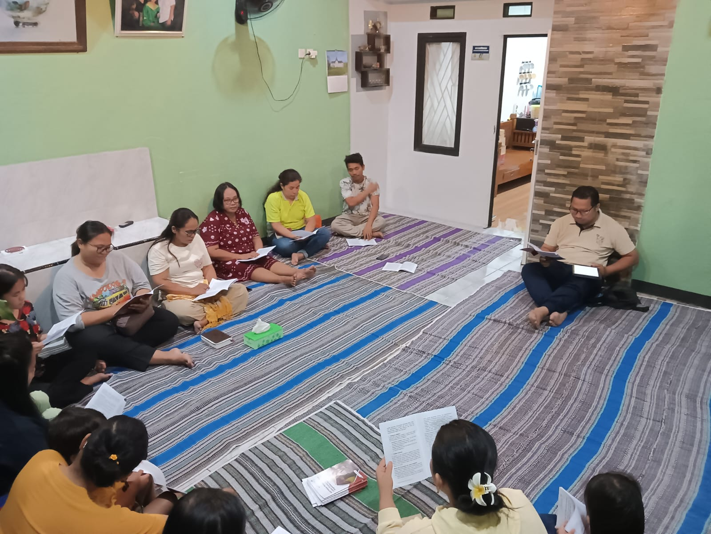
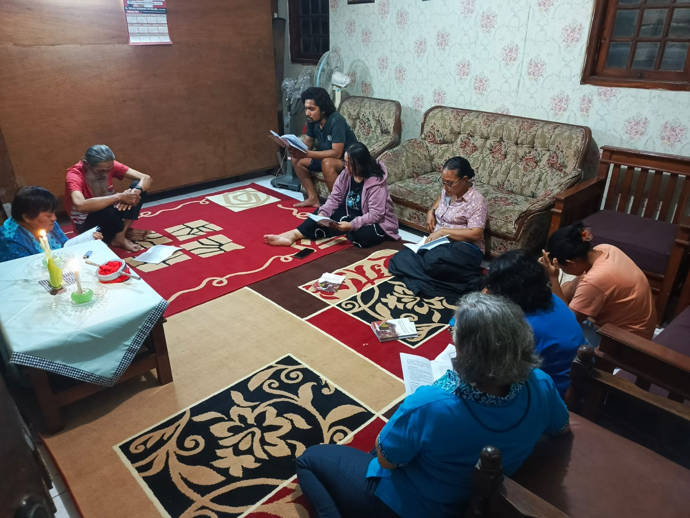
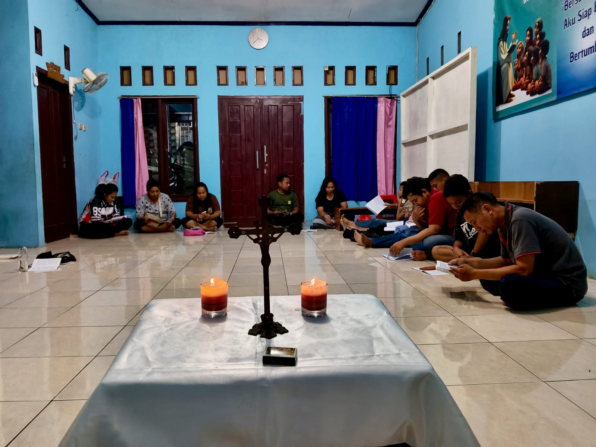
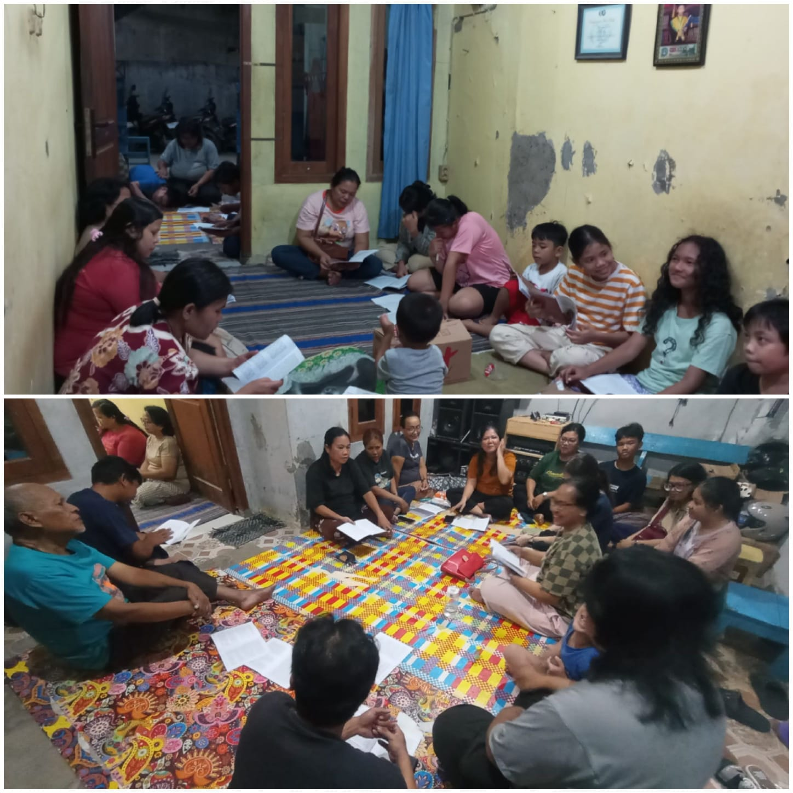
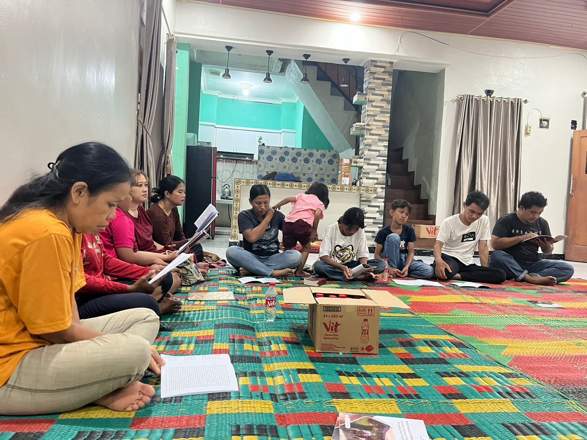

Dalam semangat Masa Prapaskah, umat Katolik diajak untuk semakin memperdalam iman melalui doa, puasa, dan karya kasih. Salah satu wujud nyata dari semangat tersebut adalah melalui kegiatan Aksi Puasa Pembangunan (APP) yang setiap tahunnya menjadi sarana pembinaan iman sekaligus solidaritas umat. Pada tahun ini, APP mengusung tema “Gerakan Misioner Gereja dalam Menghadirkan Pengharapan.” Tema ini mengajak seluruh umat untuk menyadari panggilan sebagai murid-murid Kristus yang diutus untuk menjadi pembawa harapan di tengah masyarakat. Melalui semangat misioner, setiap umat diajak untuk tidak hanya bertumbuh dalam iman secara pribadi, tetapi juga menghadirkan kasih, kepedulian, serta pengharapan bagi sesama, terutama bagi mereka yang membutuhkan. Sebagai bagian dari perjalanan iman tersebut, umat di berbagai lingkungan berkumpul untuk melaksanakan pertemuan APP secara bersama-sama. Dalam kebersamaan itulah, umat saling meneguhkan iman, mendalami Sabda Tuhan, serta merefleksikan panggilan hidup sebagai Gereja yang hadir dan melayani di tengah dunia. Melalui kegiatan ini diharapkan semangat kebersamaan, kepedulian, dan pelayanan semakin tumbuh dalam kehidupan umat, sehingga Gereja sungguh menjadi tanda kehadiran Kristus yang membawa pengharapan bagi semua orang.
“Dengan acara ini diharapkan umat paroki Kristus Raja Karawang dapat berjalan bersama sehati sejiwa berbagi sukacita.”




